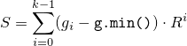

26 Numerics library [numerics]
26.6 Random number generation [rand]
26.6.7 Utilities [rand.util]
26.6.7.1 Class seed_seq [rand.util.seedseq]
class seed_seq{
public:
// types
using result_type = uint_least32_t;
// constructors
seed_seq();
template<class T>
seed_seq(initializer_list<T> il);
template<class InputIterator>
seed_seq(InputIterator begin, InputIterator end);
// generating functions
template<class RandomAccessIterator>
void generate(RandomAccessIterator begin, RandomAccessIterator end);
// property functions
size_t size() const noexcept;
template<class OutputIterator>
void param(OutputIterator dest) const;
// no copy functions
seed_seq(const seed_seq& ) = delete;
void operator=(const seed_seq& ) = delete;
private:
vector<result_type> v; // exposition only
};
Effects: Constructs a seed_seq object as if by default-constructing its member v.
Throws: Nothing.
template<class T>
seed_seq(initializer_list<T> il);
Requires: T shall be an integer type.
Effects: Same as seed_seq(il.begin(), il.end()).
template<class InputIterator>
seed_seq(InputIterator begin, InputIterator end);
Requires: InputIterator shall satisfy the requirements of an input iterator (Table [tab:iterator.input.requirements]) type. Moreover, iterator_traits<InputIterator>::value_type shall denote an integer type.
Effects: Constructs a seed_seq object by the following algorithm:
for( InputIterator s = begin; s != end; ++s)
v.push_back((*s)mod 232);
template<class RandomAccessIterator>
void generate(RandomAccessIterator begin, RandomAccessIterator end);
Requires: RandomAccessIterator shall meet the requirements of a mutable random access iterator (Table [tab:iterator.random.access.requirements]) type. Moreover, iterator_traits<RandomAccessIterator>::value_type shall denote an unsigned integer type capable of accommodating 32-bit quantities.
Effects: Does nothing if begin == end. Otherwise, with s = v.size() and n = end - begin , fills the supplied range [begin,end) according to the following algorithm in which each operation is to be carried out modulo 232, each indexing operator applied to begin is to be taken modulo n, and T(x) is defined as x xor (x rshift 27):
By way of initialization, set each element of the range to the value 0x8b8b8b8b. Additionally, for use in subsequent steps, let p = (n - t) / 2 and let q = p + t, where t = (n ≥ 623) ? 11 : (n ≥ 68) ? 7 : (n ≥ 39) ? 5 : (n ≥ 7) ? 3 : (n - 1)/2;
With m as the larger of s + 1 and n, transform the elements of the range: iteratively for k = 0, …, m-1 , calculate values
![\begin{eqnarray*}
r_1 & = &
1664525 \cdot \texttt{T}\left( \texttt{begin[}k\texttt{]}
\ensuremath{\, \mathsf{xor} \,} \texttt{begin[}k+p\texttt{]}
\ensuremath{\, \mathsf{xor} \,} \texttt{begin[}k-1 \texttt{]}
\right)
\\
r_2 & = & r_1 + \left\{
\begin{array}{cl}
s & \mbox{, } k = 0
\\
k \bmod n + \texttt{v[}k-1\texttt{]} & \mbox{, } 0 < k \le s
\\
k \bmod n & \mbox{, } s < k
\end{array}
\right.
\end{eqnarray*}](math/5460180720864397012.png) and, in order,
increment begin[k+p] by r1,
increment begin[k+q] by r2,
and
set begin[k] to r2.
and, in order,
increment begin[k+p] by r1,
increment begin[k+q] by r2,
and
set begin[k] to r2.
Transform the elements of the range again, beginning where the previous step ended: iteratively for k = m, …, m+n-1 , calculate values
![\begin{eqnarray*}
r_3 & = &
1566083941 \cdot \texttt{T}\left( \texttt{begin[}k \texttt{]}
+ \texttt{begin[}k+p\texttt{]}
+ \texttt{begin[}k-1\texttt{]}
\right)
\\
r_4 & = & r_3 - (k \bmod n)
\end{eqnarray*}](math/5265029910326981193.png) and, in order,
update begin[k+p] by xoring it with r3,
update begin[k+q] by xoring it with r4,
and
set begin[k] to r4.
and, in order,
update begin[k+p] by xoring it with r3,
update begin[k+q] by xoring it with r4,
and
set begin[k] to r4.
Throws: What and when RandomAccessIterator operations of begin and end throw.
Returns: The number of 32-bit units that would be returned by a call to param().
Complexity: Constant time.
template<class OutputIterator>
void param(OutputIterator dest) const;
Requires: OutputIterator shall satisfy the requirements of an output iterator (Table [tab:iterator.output.requirements]) type. Moreover, the expression *dest = rt shall be valid for a value rt of type result_type.
Effects: Copies the sequence of prepared 32-bit units to the given destination, as if by executing the following statement:
copy(v.begin(), v.end(), dest);
Throws: What and when OutputIterator operations of dest throw.
26.6.7.2 Function template generate_canonical [rand.util.canonical]
Each function instantiated from the template described in this section [rand.util.canonical] maps the result of one or more invocations of a supplied uniform random bit generator g to one member of the specified RealType such that, if the values gi produced by g are uniformly distributed, the instantiation's results tj, 0 ≤ tj < 1 , are distributed as uniformly as possible as specified below.
[ Note: Obtaining a value in this way can be a useful step in the process of transforming a value generated by a uniform random bit generator into a value that can be delivered by a random number distribution. — end note ]
template<class RealType, size_t bits, class URBG>
RealType generate_canonical(URBG& g);
Complexity: Exactly k = max(1, ⌈ b / log2 R ⌉) invocations of g, where b274 is the lesser of numeric_limits<RealType>::digits and bits, and R is the value of g.max() - g.min() + 1 .
Effects: Invokes g() k times to obtain values g0, …, gk-1 , respectively. Calculates a quantity  using arithmetic of type RealType.
Returns: S / Rk .
Throws: What and when g throws.
b is introduced to avoid any attempt to produce more bits of randomness than can be held in RealType.